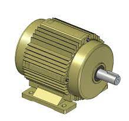

<div class="container">
  <div class="row">
    <div class="col-sm-3 d-flex align-items-center">
        <h1>{{machineId}} - {{machineName}}</h1>
    </div>
    <div class="col-sm">
        <div class="form-floating mb-3">
          <input type="date" class="form-control" id="floatingInput" placeholder="起" [(ngModel)]="currentSDate">
          <label for="floatingInput">起</label>
        </div>
    </div>
    <div class="col-sm">
        <div class="form-floating mb-3">
          <input type="date" class="form-control" id="floatingInput" placeholder="訖" [(ngModel)]="currentEDate">
          <label for="floatingInput">訖</label>
        </div>
    </div>
    <div class="col-sm d-flex align-items-center">
        <button class="btn btn-outline-primary" (click)="showmachineinfo()" *ngIf="loading==false">查詢</button>
    </div>
    <div class="col-sm-2 d-flex align-items-center">
      <p>資料時間:{{machineDttm}}</p>
    </div>
  </div>


  <div class="row">
      <div class="col-sm">
          <table class="table table-bordered " >
              <thead >
                <tr>
                  <th scope="col">設備</th>
                  <th scope="col">感測要因</th>
                  <th scope="col">規範值</th>
                  <th scope="col">實際測量值</th>
                  <th scope="col">健康分數</th>
                  <th scope="col">狀態</th>
                </tr>
              </thead>
              <tbody>
                <tr>
                  <td>馬達</td>
                  <td>電流</td>
                  <td>{{elelimit}}A</td>
                  <td>{{machineEle}}</td>
                  <td>{{machineHealthyScoreEle}}</td>
                  <td><span  [ngClass]="gethealthycolor(machineHealthyEle)"></span></td>
                </tr>
                <tr>
                  <td rowspan="2" style="text-align: center; vertical-align: middle;">
                    
                  </td>
                  <td>溫度</td>
                  <td>{{tmplimit}}°C</td>
                  <td>{{machineTmp}}</td>
                  <td>{{machineHealthyScoreTmp}}</td>
                  <td><span [ngClass]="gethealthycolor(machineHealthyTmp)"></span></td>
                </tr>
                <tr>
                  <td>震動</td>
                  <td>{{shakelimit}} mm/s↓</td>
                  <td>{{machineShake}}</td>
                  <td>{{machineHealthyScoreShake}}</td>
                  <td><span [ngClass]="gethealthycolor(machineHealthyShake)"></span></td>
                </tr>
              </tbody>
            </table>
      </div> 
  </div>

  <div class="col-sm" style="background-color: #add8e6; padding: 10px;" *ngIf="loading">
    <div class="text-center">
      <div class="spinner-border text-white" style="width: 3rem; height: 3rem;" role="status">
        <span class="visually-hidden"></span>
      </div>
      <h1 class="text-white">資料讀取中</h1>
    </div>
  </div>
  

  <div class="row" style="padding: 1%;" >
    <div class="col-sm">
        <h1>電流即時監控(A)</h1>
        <div id="divChart">
            <canvas id="ele" style="height: 200px"></canvas>
        </div>   
    </div>
  </div>
  <div class="row"  style="padding: 1%;">
    <div class="col-sm">
      <h1>溫度即時監控(°C)</h1>
      <div id="divChart">
          <canvas id="tmp"  style="height: 200px"></canvas>
      </div>   
    </div>
  </div>

  <div class="row" style="padding: 1%;">
    <div class="col-sm">
      <h1>震動即時監控(mm/s)</h1>
      <div id="divChart">
          <canvas id="shake"  style="height: 200px"></canvas>
      </div>   
    </div>
  </div>
</div>


<div id="divChart">
  <canvas id="test"  style="height: 200px"></canvas>
</div>  